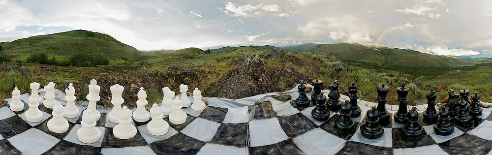

The Rise of Chess Game
By George Abdulaziz, February, 2022
 Chess is a very famouse board game played between two players. The current form of the game emerged in Southern Europe during the second half of the 15th century Wikipedia. Today, chess is one of the world's most popular games, played by millions of people worldwide.
Chess is an abstract strategy game and involves no hidden information. It is played on a square chessboard with 64 squares arranged in an eight-by-eight grid. At the start, each player (one controlling the white pieces, the other controlling the black pieces) controls sixteen pieces: one king, one queen, two rooks, two knights, two bishops, and eight pawns. The object of the game is to checkmate the opponent's king, whereby the king is under immediate attack (in "check") and there is no way for it to escape. There are also several ways a game can end in a draw.
Organized chess arose in the 19th century. Chess competition today is governed internationally by FIDE (International Chess Federation). The first universally recognized World Chess Champion, Wilhelm Steinitz, claimed his title in 1886; Magnus Carlsen is the current World Champion. A huge body of chess theory has developed since the game's inception. Aspects of art are found in chess composition; and chess in its turn influenced Western culture and art and has connections with other fields such as mathematics, computer science, and psychology.
One of the goals of early computer scientists was to create a chess-playing machine. In 1997, Deep Blue became the first computer to beat the reigning World Champion in a match when it defeated Garry Kasparov. Today's chess engines are significantly stronger than the best human players, and have deeply influenced the development of chess theory.
Chess Game Pieces
In competitive games, the piece colors are allocated to players by the organizers; in informal games, the colors are usually decided randomly, for example by a coin toss, or by one player concealing a white pawn in one hand and a black pawn in the other, and having the opponent choose. White moves first, after which players alternate turns, moving one piece per turn (except for castling, when two pieces are moved). A piece is moved to either an unoccupied square or one occupied by an opponent's piece, which is captured and removed from play. With the sole exception of en passant, all pieces capture by moving to the square that the opponent's piece occupies. Moving is compulsory; a player may not skip a turn, even when having to move is detrimental.
Each piece has its own way of moving. In the diagrams, the dots mark the squares to which the piece can move if there are no intervening piece(s) of either color (except the knight, which leaps over any intervening pieces). All pieces except the pawn can capture an enemy piece if it is located on a square to which they would be able to move if the square was unoccupied. The squares on which pawns can capture enemy pieces are marked in the diagram with black crosses.
- The moves one square in any direction. There is also a special move called castling that involves moving the king and a rook. The king is the most valuable piece — attacks on the king must be immediately countered, and if this is impossible, immediate loss of the game ensues (see Check and checkmate below).
- A can move any number of squares along a rank or file, but cannot leap over other pieces. Along with the king, a rook is involved during the king's castling move.
- A can move any number of squares diagonally, but cannot leap over other pieces.
- A combines the power of a rook and bishop and can move any number of squares along a rank, file, or diagonal, but cannot leap over other pieces.
- A moves to any of the closest squares that are not on the same rank, file, or diagonal. (Thus the move forms an "L"-shape: two squares vertically and one square horizontally, or two squares horizontally and one square vertically.) The knight is the only piece that can leap over other pieces.
- A can move forward to the unoccupied square immediately in front of it on the same file, or on its first move it can advance two squares along the same file, provided both squares are unoccupied (black dots in the diagram). A pawn can capture an opponent's piece on a square diagonally in front of it by moving to that square (black crosses). A pawn has two special moves: the en passant capture and promotion